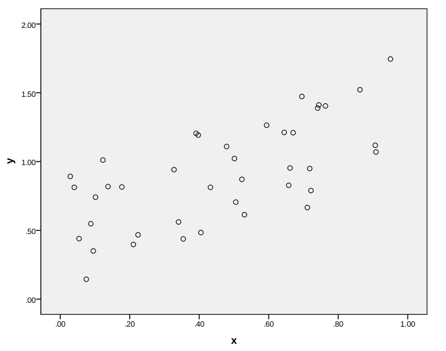
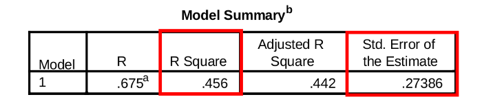

STAT 301
Lab 10: Least Squares Regression
T.A.: Yixuan Qiu
Scatterplot
- Study the relationship between two quantitative variables. 
Scatterplot
- Form: linear or non-linear?
- Direction: positive or negative?
- Strength: strong or weak?
- Outliers?
Linear Regression
- Find a straight line to fit the relationship between $X$ and $Y$
- Also used to predict $Y$ for a given $X$

Regression Equation
- $\hat{y}=b_0+b_1 x$


Check the Assumptions
- Data coming from SRS
- Variables linearly related (Scatterplot)
- Normality of $Y$ (PP-plot)
- Same standard deviation at all $X$ values (Residual plot)
PP-plot

Residual Plot